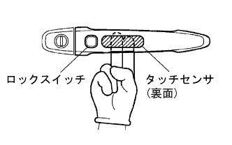
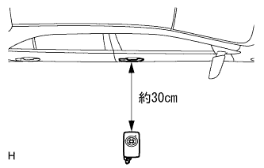
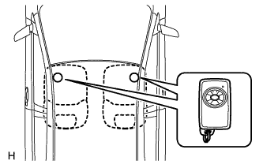
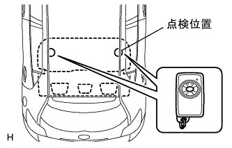

Smart Entry & Start System (Smart Entry) Function Inspection |
| 1. Inspect Smart Entry & Start System (Smart Entry) Operation |
Smart Door Unlock Function Inspection (Driver Side, Front Passenger Side)
With all doors locked by wireless operation and while carrying the electrical key transmitter, check that all doors unlock when the touch sensor built into the back side of the door outside handle of the driver or front passenger door is touched.
For the smart door unlock detection area, when the electrical key transmitter is held at the same height as the door outside handle (approximately 80cm above the ground) as shown in the illustration, check that unlock mode [the electrical key transmitter LED (red) blinks] is entered at a position approximately 70cm away from the vehicle.
Check that all doors unlock when the door outside handle is touched within 3 seconds from the unlock mode state.
Check the front passenger door in the same way.
 |
For the door electrical oscillator key (touch sensor) response sensitivity inspection, check that unlock operates when the area shown in the illustration is touched while wearing work gloves in unlock mode.
Check the front passenger door in the same way.
Smart Door Lock Function Inspection (Driver Side, Front Passenger Side)
With all doors closed and unlocked, and while carrying the electrical key transmitter outside the vehicle, check that all doors lock when the lock switch (trigger switch) on the door outside handle of the driver or front passenger door is pressed.
 |
To inspect the smart door lock operating range, hold the electrical key transmitter 10cm below the lower edge of the door glass (approximately 1m above the ground) as shown in the illustration, and check that all doors lock when the trigger switch is pressed at approximately 30cm away from the vehicle.
Check the front passenger door in the same way.
Smart Ignition Function Inspection
With the IG OFF, enter the vehicle carrying the electrical key transmitter. With the shift lever in P, check that the engine switch indicator illuminates green when the brake pedal is depressed, and that the engine starts when the engine switch is pressed while the indicator is illuminated green.
While carrying the electrical key transmitter, with the shift lever in P, check that each press of the engine switch without depressing the brake pedal changes the mode "IG OFF" → "ACC ON" → "IG ON" → "IG OFF". However, if the engine switch is pressed from IG ON with the shift lever in any position other than P, the mode changes to ACC ON instead of IG OFF.
When the engine switch is pressed after the vehicle stops, the mode changes to IG OFF (engine stopped, all power OFF). However, if the shift lever is in any position other than P, pressing the engine switch with the vehicle stopped changes the power to ACC ON, not IG OFF.
 |
For the smart ignition operating range inspection (front side), check that the engine can be started when the electrical key transmitter is placed at the inspection position on the front seat cushion.
 |
For the smart ignition operating range inspection (rear side), check that the engine can be started when the electrical key transmitter is placed at the inspection position on the rear seat cushion.
Key Lock-in Prevention Function Inspection (Inside Cabin)
Place the electrical key transmitter on the driver seat, front passenger seat or rear seat cushion.
Close all doors. (All doors unlocked)
Check that the doors do not lock when the lock switch of the driver or front passenger door is pressed, and that the key lock-in prevention buzzer (outside) sounds for 2 seconds.
Smart Cancel Function Inspection
Check that none of the Smart Entry & Start System (smart entry) functions can be operated when the smart entry cancel setting has been made.
Answer-back (Wireless Buzzer Sounding, Hazard Flashing) Function Inspection
| Smart Operation | Wireless Buzzer Sounds | Hazard Flashing |
|---|---|---|
| Door Lock | 1 time(s) | 1 time(s) |
| Door Unlock | 2 time(s) | 2 time(s) |
Check the answer-back when each operation of the Smart Entry & Start System (smart entry) is performed.
| 2. TaSCAN Electronic Key Diagnosis Mode |
Using SST (TaSCAN), select "Diagnosis" → "Body" → "Certification" → "Electronic Key Diagnosis Mode".
Select the transmitter to be inspected from the following items.
| Item | Inspectable Range |
|---|---|
| D seat transmission → Inside tuner [*1] | Door Electrical Key Oscillator (Driver Side Outside Antenna) |
| P seat transmission → Inside tuner [*2] | Door Electrical Key Oscillator (Front Passenger Side Outside Antenna) |
| Fr seat transmission → Inside tuner [*3] | Indoor electrical oscillator key (front inside antenna) |
| Rr seat transmission → Inside tuner [*4] | Indoor electrical oscillator key (rear inside antenna) |
| Back door inside transmission → Inside tuner [*5] | Indoor electrical oscillator key (luggage room inside antenna) |
| Back door outside transmission → Inside tuner [*6] | Electrical key antenna (luggage room outside antenna) |
Check that the wireless door lock buzzer sounds when the electrical key transmitter is brought close to the selected transmitter.
[*1]: Door electrical oscillator key (driver side outside antenna)
 |
[*3]: Indoor electrical oscillator key (front inside antenna)
[*4]: Indoor electrical oscillator key (rear inside antenna)
[*5]: Indoor electrical oscillator key (luggage room antenna)
[*6]: Electrical key antenna (luggage room outside antenna)